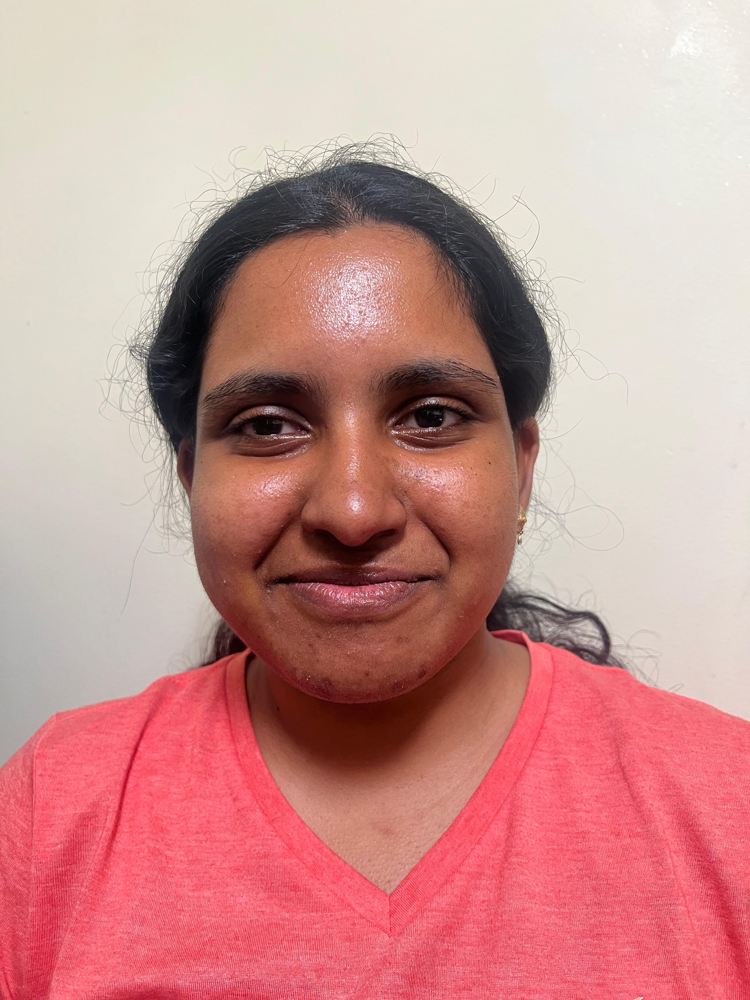

CS180 Project 0 — Balakrishnan Vaisiya
First photo taken up close with no zoom, second taken from a small distance back and zoomed in until my face was about the same size again.

The close-up shot looks a bit rough. My nose looks bigger, face is more oval, and my ears kind of disappear. I initially thought my phone camera was just bad at face. However, I realised that up close, the tip of my nose and the back of my ears are at different distances from the camera, so they end up getting scaled differently in the photo. Once I pull back the camera a bit, that gap is much smaller compared to the total distance to the camera, so my face ends up looking more like it does in real life.
Photos of building taken from across the field, first zoomed in from far away, then close up with no zoom.
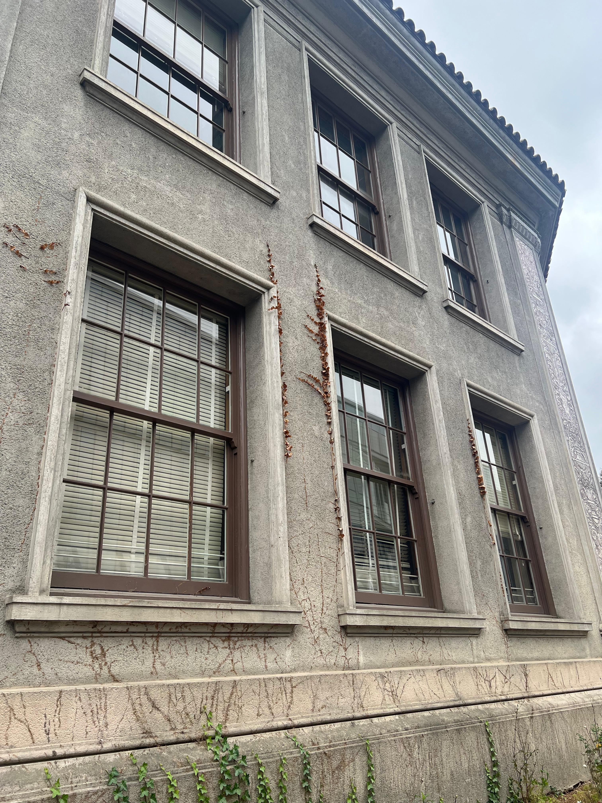
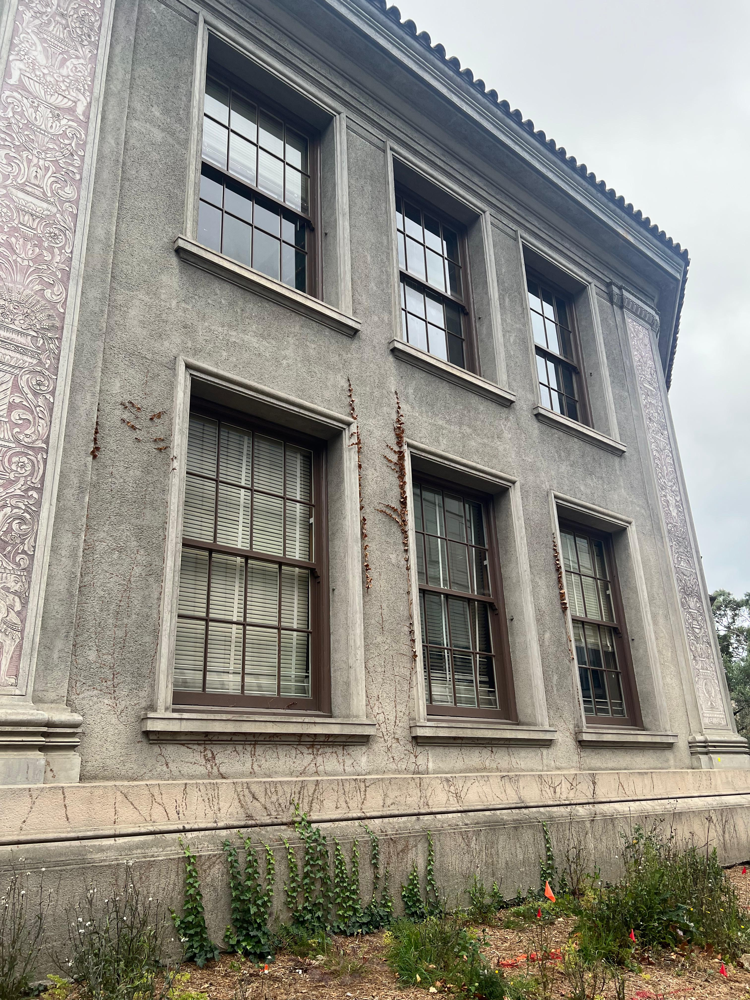
Similar idea as Part 1, just at a larger scale. From far away, the near and far corners of the facade are almost the same distance from the camera so the building looks flattened. Up close, the gap is more significant, so the building slightly stretches back out into depth.
Water bottle on my desk, shot as stills while moving the camera back and zooming in, keeping the subject about the same size throughout.
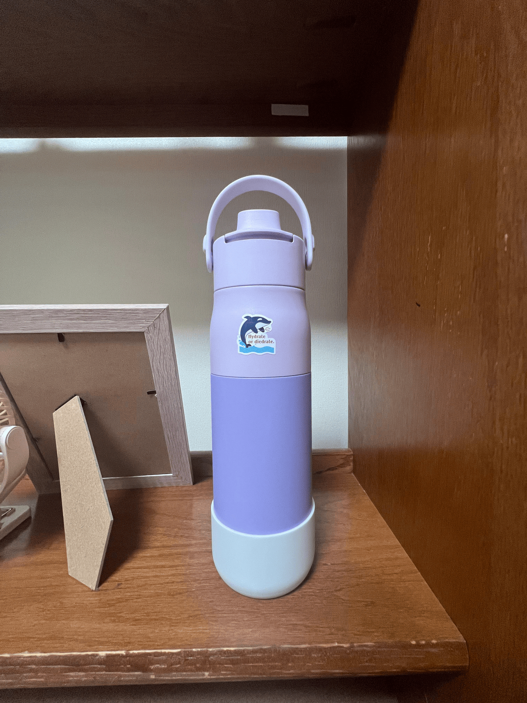
Individual frames:
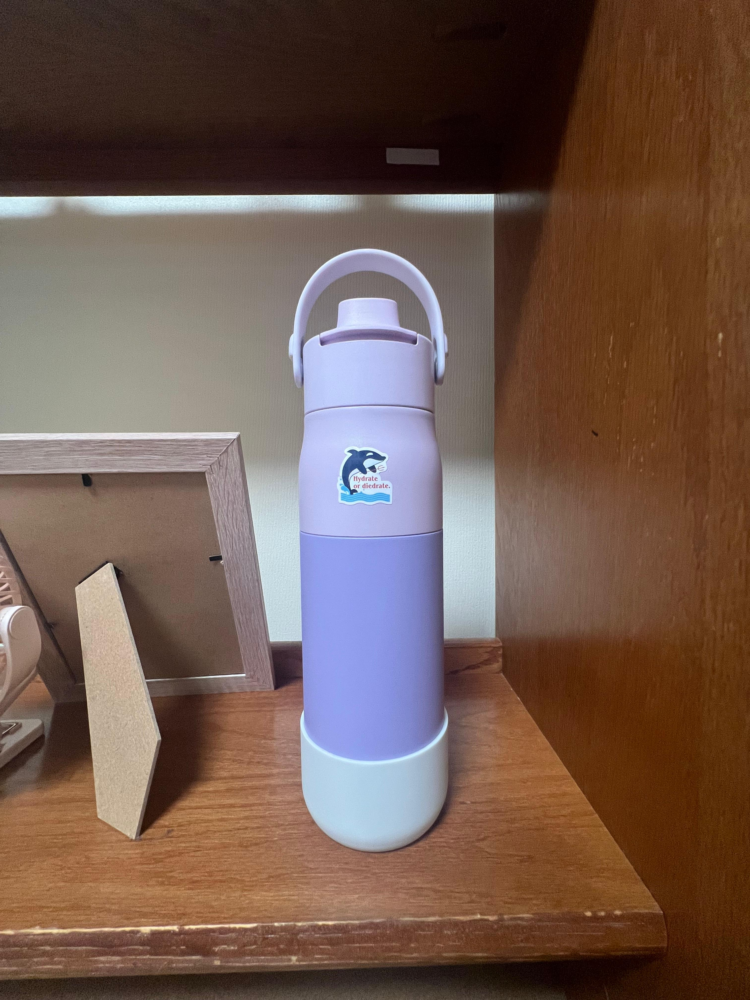
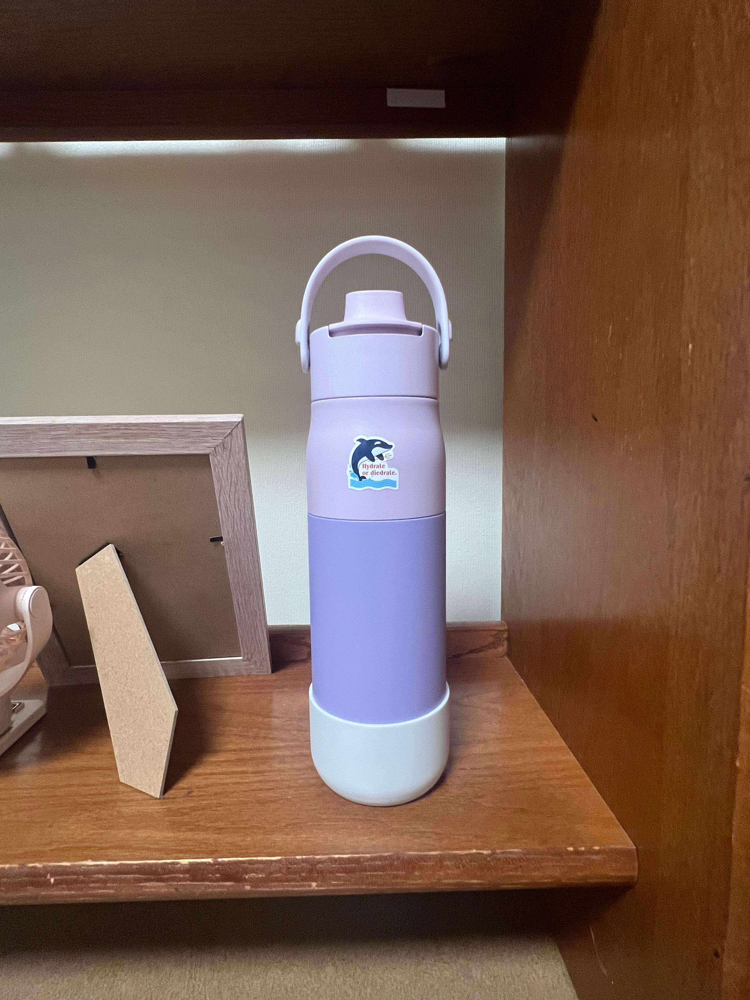
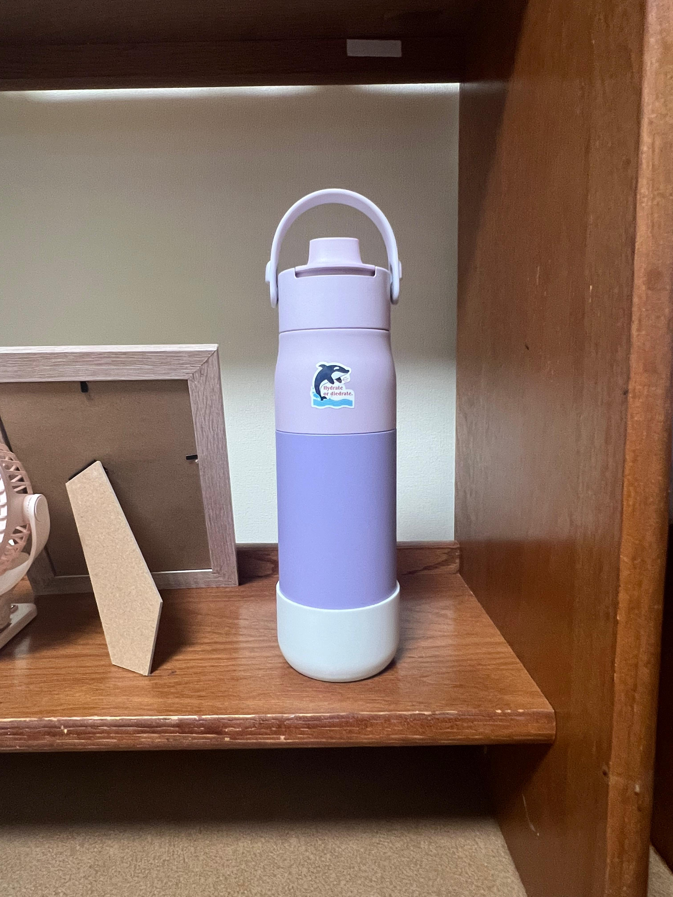
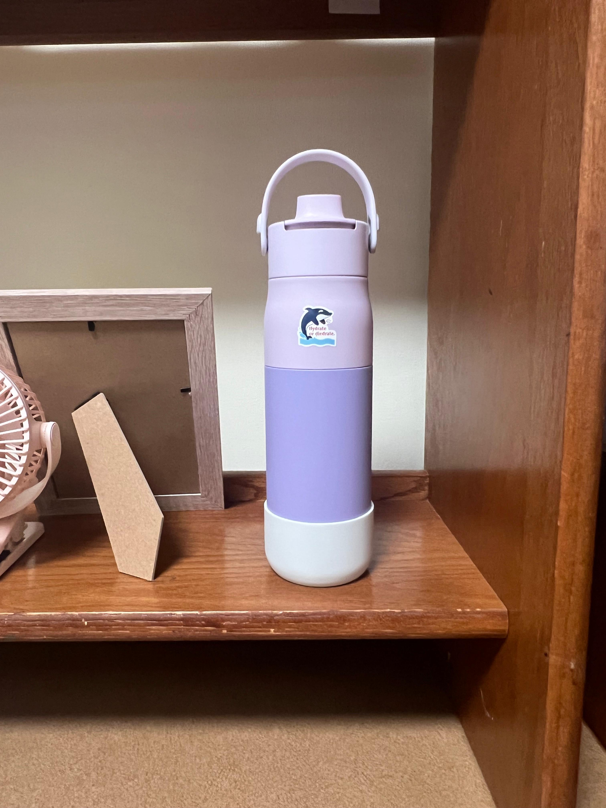
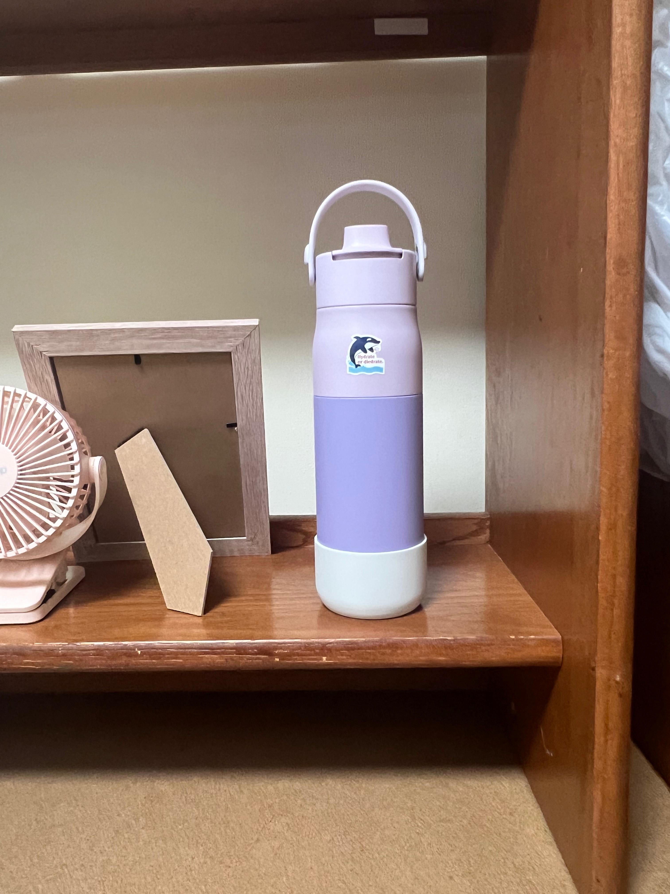
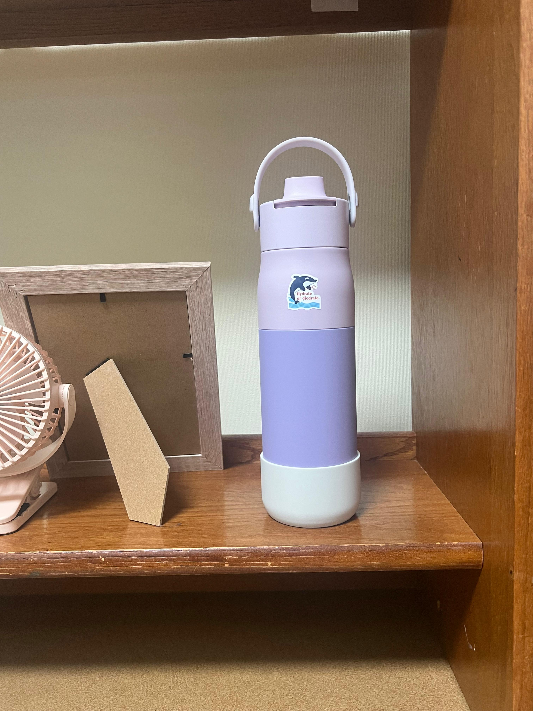
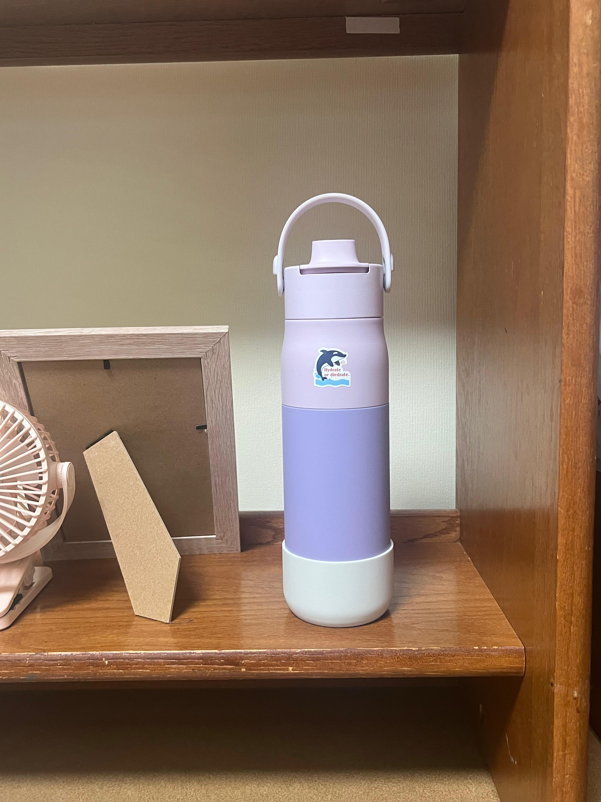
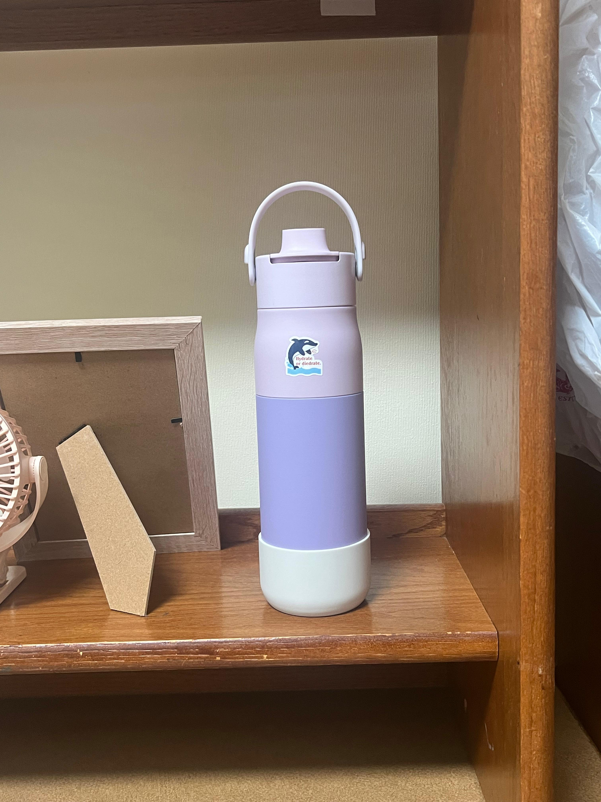
Moving the camera back while zooming in at the same rate keeps the subject's size on the sensor constant, but everything behind it stretches and moves away, since the background is far enough that changing distance barely shrinks it while the zoom is magnifying it. Every time I stepped back, I zoomed in just enough to keep the bottle the same size, so on its own the bottle does not move across the sequence too much. But the desk and other items were already far from the camera, so stepping back barely changes their distance, while the zoom is still blowing them up the same amount it's blowing up the bottle. That mismatch is what makes the background stretch outward.